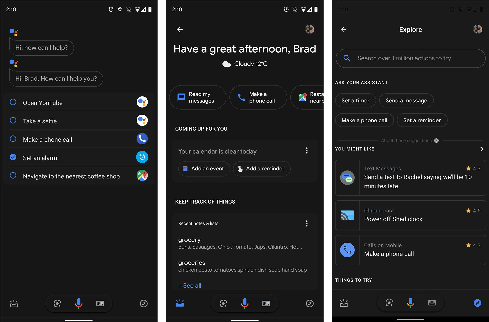

WebAssembly, World Wide Web Consortium (W3C) tarafından geliştirilmiş taşınabilir bir ikili talimat formatıdır.WebAssembly, yüksek seviyeli dilin derlenmesi ve yüksek performanslı web uygulamaları oluşturmak için kullanılır.Geliştiricilerin Wasm'ı tercih etmelerinin ana nedeni, kodun bayt kodu olarak derlenebilmesidir ve bu, herhangi bir programlama dilinde yapılabilir.
5. Motion UI

Motion Design UI, 2021 ve sonrasında izleyeceğiniz başka bir trenddir. Motion UI, gelişmiş animasyonlu web siteleri geliştirmek için kullanılır. Erken aşamasında olmasına rağmen, 2021 yılında bu alanda bir büyüme görülecektir. Web geliştiricilerinin, web sitesindeki içeriği canlandırmak için artık JavaScript ve jQuery üzerinde çalışmaları gerekmeyecek.
7. Accelerated Mobile Pages (AMP)

Mevcut web sayfalarının HTML kopyalarına hızlandırılmış mobil sayfalar adı verilir. Bu tür sayfalar hızlı yüklenir ve hafiftir.AMP, sayfaları önbelleğe almak ve mobil sayfaların kodunu hızlandırmak için optimize edilmiş, sadeleştirilmiş JS, sadeleştirilmiş HTML ve CDN içerik dağıtım ağından yararlanır.
8. Mobil Uyumlu Web Sitesi
Mobil uyumlu web siteleri, farklı boyut ve çözünürlükteki cihazlarda eşit derecede iyi çalışacak şekilde tasarlanmıştır. Google artık "mobil öncelikli dizine" ve diğer ilgili arama yönergelerine odaklandığından, web geliştiricileri mobil uyumlu web siteleri geliştirmeye daha fazla odaklanmaktadır.
9. Sesli Arama (Voice Search)

Sesli arama, cihazların kullanıcıların kendisiyle konuşarak sonuç üretmesine yardımcı olması için geliştirilmiş bir teknolojidir. Kullanıcılar tarafından söylenen kelimeleri doğru bir şekilde anlamak için bu teknoloji, bir konuşma tanıma programı kullanır. Bu, sesli aramanın sonuçları doğru şekilde vermesine yardımcı olur. Google Assistant, Microsoft'tan Cortana ve Apple'dan Siri, sesli arama teknolojisinin popüler örneklerinden bazılarıdır.
10. Karanlık Mod (Dark Mode)
Karanlık Mod, 2021'de tanık olunacak bir başka akılda kalıcı trend olacaktır. Bu mod, web sitelerinin modern görünmesini sağlayacak ve hatta tasarım ve renklere sahip olacaktır.
11. Siber Güvenlik (Cybersecurity)
Dijital platformda veri ihlalleri artıyor ve bu nedenle siber güvenliğin önemi hiçbir yere gitmeyecek. BT güvenliğine olan talep, siber saldırılar, veri ihlalleri ve bilgisayar korsanlığı işletmelerin çevrimiçi alanını tehdit ettiği sürece devam edecektir.
 Yapay Zeka tarafından desteklenen chatbotlar, geçen yıl web geliştirme trendlerinin bir parçası olarak görüldü ve bu yıl da spot ışığı paylaşacak.Yapay zeka ve chatbotlar 2021'de daha ileri bir seviyeye girecek. Kullanıcıların gelişmiş ve sorunsuz bir deneyime sahip olmalarına yardımcı olmak için, bu tür teknoloji odaklı çözümler 2021 içerisinde büyük bir rol oynayacaktır.
Yapay Zeka tarafından desteklenen chatbotlar, geçen yıl web geliştirme trendlerinin bir parçası olarak görüldü ve bu yıl da spot ışığı paylaşacak.Yapay zeka ve chatbotlar 2021'de daha ileri bir seviyeye girecek. Kullanıcıların gelişmiş ve sorunsuz bir deneyime sahip olmalarına yardımcı olmak için, bu tür teknoloji odaklı çözümler 2021 içerisinde büyük bir rol oynayacaktır. En yeni web özelliklerinden yararlanılarak uygulama benzeri bir deneyim sunmak için progresif bir web uygulaması oluşturulmuştur.Mobil web kullanıcıları göz önünde bulundurulduğunda, progresif web uygulamaları, 2021 ve sonrasında şahit olacağımız bir sonraki büyük trend olarak kabul edilmektedir.Basit tutmak için, PWA'ları daha çok bir mobil uygulama gibi çalışan bir web sitesi olarak düşünebilirsiniz.
En yeni web özelliklerinden yararlanılarak uygulama benzeri bir deneyim sunmak için progresif bir web uygulaması oluşturulmuştur.Mobil web kullanıcıları göz önünde bulundurulduğunda, progresif web uygulamaları, 2021 ve sonrasında şahit olacağımız bir sonraki büyük trend olarak kabul edilmektedir.Basit tutmak için, PWA'ları daha çok bir mobil uygulama gibi çalışan bir web sitesi olarak düşünebilirsiniz. Tek Sayfa Uygulamaları (SPA'lar) aslında tek bir sayfa olarak yüklenen web uygulamalarıdır. Burada sayfaların içeriği dinamik olarak yüklenir.Tek sayfa uygulamaları kullanırken sorunsuz ve kesintisiz bir deneyim sunarlar.
Tek Sayfa Uygulamaları (SPA'lar) aslında tek bir sayfa olarak yüklenen web uygulamalarıdır. Burada sayfaların içeriği dinamik olarak yüklenir.Tek sayfa uygulamaları kullanırken sorunsuz ve kesintisiz bir deneyim sunarlar.